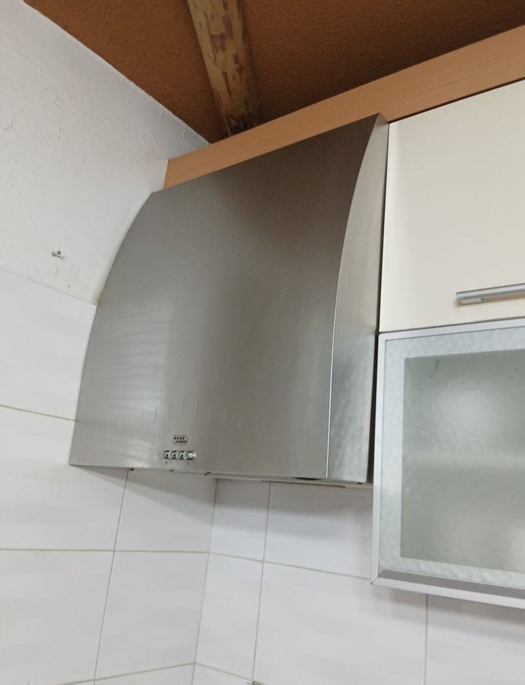
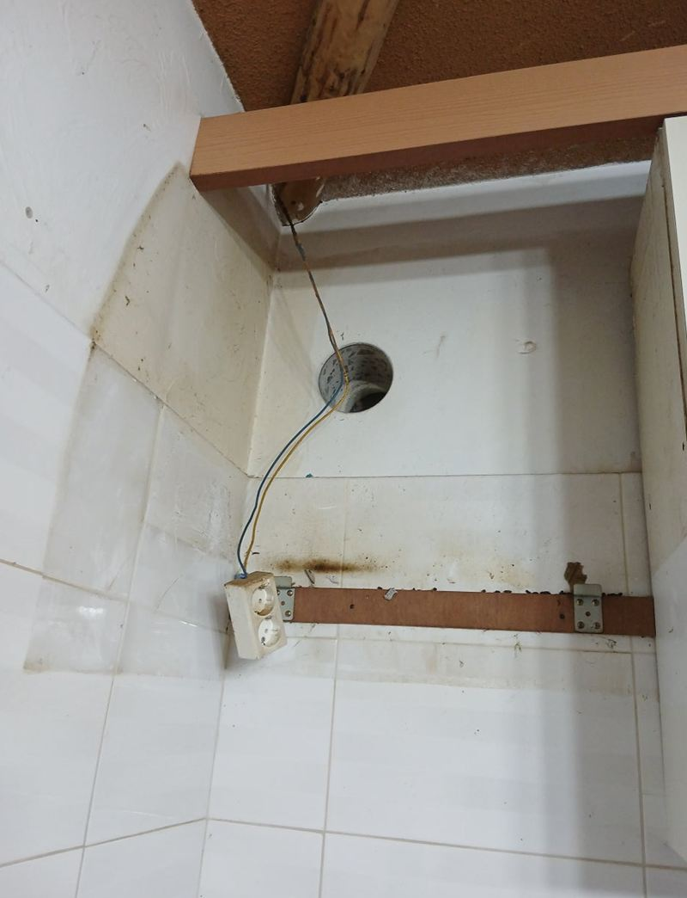
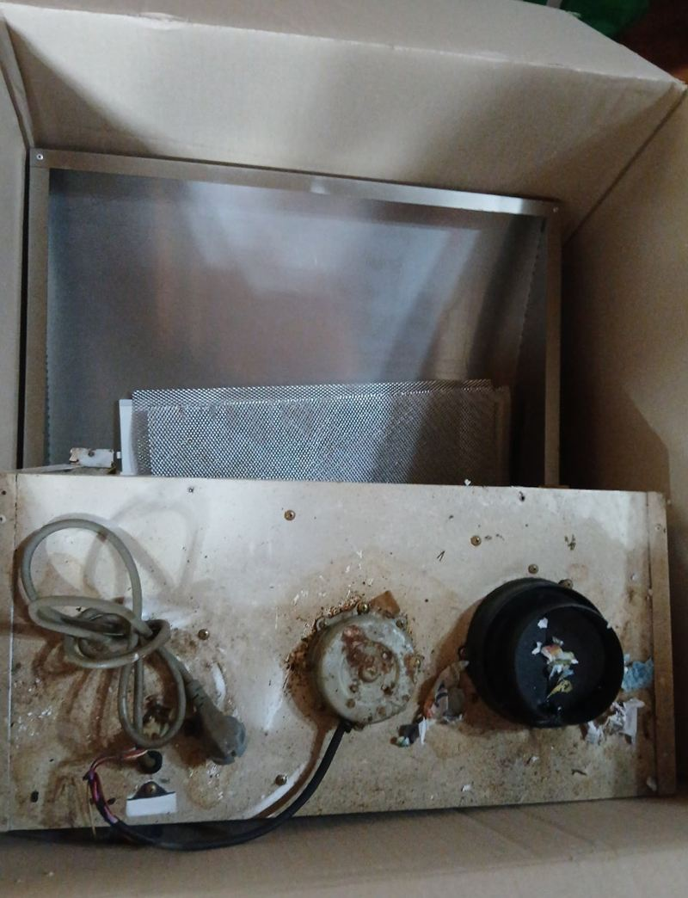
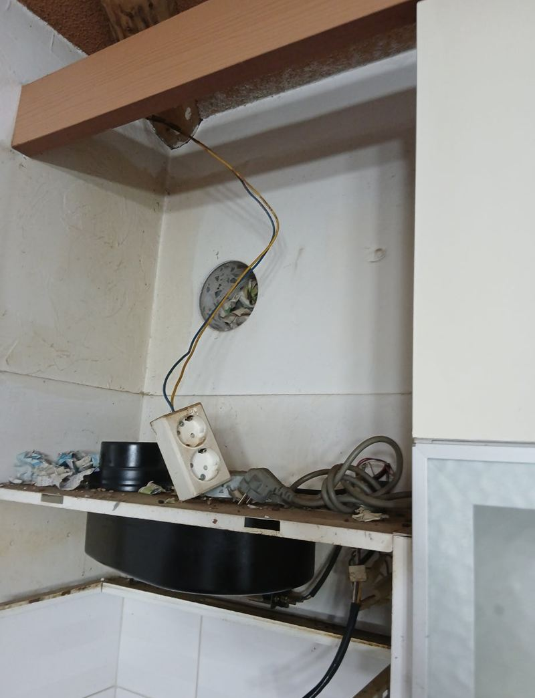
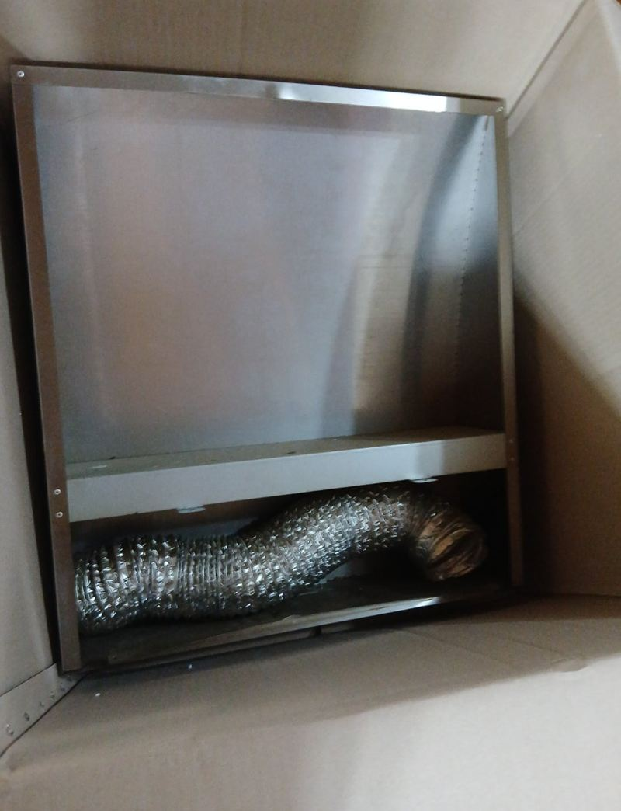
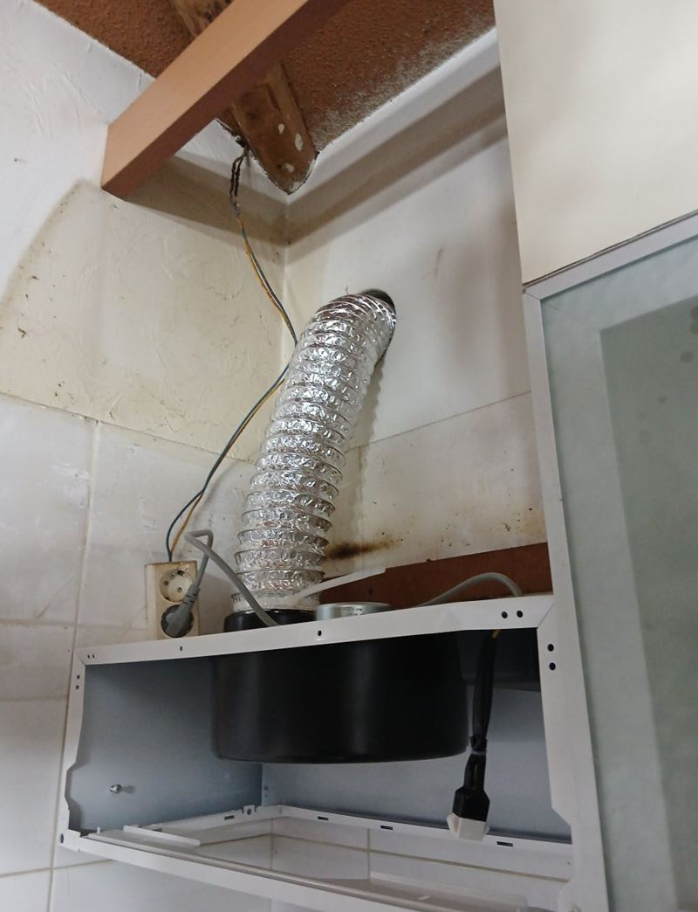
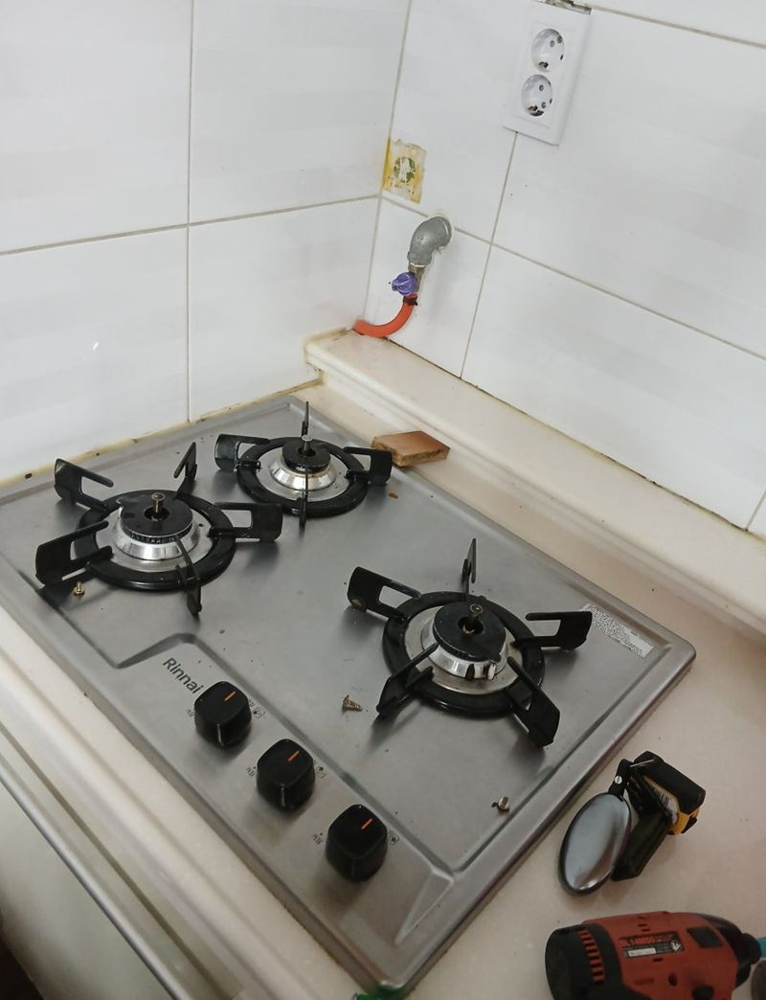

양평 후드 연기 역류 원인과 해결 방법

 교체 전교체 후
교체 전교체 후← 밀어서 전후 비교 →
"후드가 고장 나서 몇 년간 안 쓰고 있었어요. 교체가 되는지 봐 주실래요?" 양평 강하면 전원주택이었어요. 막상 열어 보니 문제는 후드 고장이 아니었어요. 배기구가 신문지로 막혀 있었고, 연통 안에는 먼지와 벌레 사체, 쥐 배설물까지 쌓여 있었어요. 연기가 나갈 길이 없으니 집 안으로 되돌아올 수밖에 없었어요. 옛 후드를 떼고 연통과 배기구를 깨끗이 비운 뒤, 바깥으로 바로 내보내는 덕트형 후드를 새로 달았어요.
| 현장 | 양평 강하면 전원주택 주방 |
|---|---|
| 증상 | 후드를 켜도 연기·냄새가 안 빠져 몇 년간 사용 중단 |
| 원인 | 신문지로 막힌 배기구, 오물이 쌓인 연통, 잘못된 설치 |
| 한 일 | 기존 후드 탈착 → 연통·배기구 청소 → 연통 재정비 → 덕트형 후드 설치 → 실리콘 마감 |
연기가 역류하는 원인
| 원인 | 어떤 일이 생기나 |
|---|---|
| 연통 막힘 | 신문지, 쓰레기, 동물 배설물로 공기가 못 나감 |
| 연통 미연결 | 후드와 바깥 배기구가 이어지지 않아 연기가 돎 |
| 거리 문제 | 후드가 너무 높아 연기를 못 빨아들임 |
| 설치 미숙 | 후드는 멀쩡한데 제 기능을 못 함 |
이 집은 이 중 여러 개가 겹쳐 있었어요. 후드를 바꾸기만 했다면 같은 일이 그대로 반복됐을 거예요. 막힌 길을 여는 게 먼저였어요.
막힌 연통 정리하고 교체하기
옛 후드 떼기
상부장 쪽 타일이 변형된 채 고정돼 있어 떼기가 까다로웠어요. 기구와 주변이 상하지 않게 천천히 분리했어요.


연통·배기구 청소
배기구를 막고 있던 신문지를 빼고, 연통 안 먼지와 벌레 사체, 쥐 배설물을 모두 걷어 냈어요. 청소 전후 배기 통로가 완전히 달라졌어요.

덕트형 후드 설치
연통을 다시 정비하고, 공기를 바로 바깥으로 내보내는 덕트형 후드를 달았어요. 이음부와 테두리는 실리콘으로 마감했어요.


고객분은 "고장 난 줄만 알았는데 연통이 아예 안 이어져 있었다니 놀랐다, 오늘 저녁부터 안심하고 요리하겠다"고 하셨어요.
후드와 가스레인지 거리
후드 아래와 가스레인지 윗면 사이는 보통 65~75cm 정도가 알맞아요. 너무 멀면 흡입이 약해지고, 너무 가까우면 열 때문에 고장이나 화재 위험이 생겨요. 이 집도 거리가 지나치게 멀어 흡입이 거의 안 되던 상태였어요.

- 덕트형연통으로 바깥에 직접 배출, 흡입이 강해야 할 때
- 순환형필터로 걸러 다시 돌림, 연통을 낼 수 없는 집
- 저소음형밤에 요리를 자주 하는 집
오래 비워 둔 집이라면 함께 보세요
오래 쓰지 않은 전원주택은 후드 연통처럼 바깥과 이어진 통로로 쥐나 벌레가 드나들기 쉬워요. 배기구 쪽에 덮개가 없거나 틈이 벌어져 있으면 막아 두는 게 좋아요. 이 현장도 연통을 정리하면서 바깥 쪽 상태를 함께 확인했어요.
후드를 새로 달고 나서 처음 몇 번은 요리할 때 연기가 제대로 빨려 나가는지 지켜봐 주세요. 이상하면 연결부가 빠졌는지부터 보면 돼요.
후드 역류 질문
후드 문제인지 연통 문제인지 어떻게 알아요?
모터 소리는 나는데 연기가 안 빨리면 연통·배기구 쪽을 먼저 의심해요.
연통 청소만 해도 되나요?
후드가 멀쩡하면 청소와 연결만으로 해결되는 경우도 있어요.
바깥 배기구에 망을 달 수 있나요?
새나 쥐가 들어오지 않게 배기구에 덮개를 다는 게 좋아요.
전원주택도 아파트와 같은 후드를 쓰나요?
바깥으로 바로 뺄 수 있으면 덕트형이 잘 맞아요. 구조를 보고 골라요.
오래 안 쓴 후드는 버려야 하나요?
모터가 살아 있으면 청소 후 쓸 수도 있어요. 녹과 오염 상태를 보고 정해요.
냄새가 위층에서 내려와요.
역류 방지 댐퍼가 없거나 고장 난 경우가 많아요. 배기구 쪽을 확인해요.
연통 길이가 길면 흡입이 약해지나요?
연통이 길고 많이 꺾일수록 공기가 덜 빠져요. 가능하면 짧고 곧게 빼는 게 좋아요.
다른 후드 현장
후드 정면과 상부장 안 연통, 바깥 배기구 사진을 보내 주세요.
전화 상담 010-4517-9872